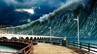
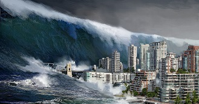

Ultimas noticias

Los tsunamis son una serie de olas de gran energía que se generan principalmente por terremotos submarinos, aunque también pueden ser causados por erupciones volcánicas, deslizamientos de tierra o, en casos muy poco frecuentes, por el impacto de meteoritos. En mar abierto, las olas suelen ser bajas y pueden viajar a velocidades superiores a los 700 km/h, por lo que son difíciles de detectar sin instrumentos especializados.
Cuando un tsunami se acerca a la costa, la profundidad del mar disminuye y las olas aumentan considerablemente de altura, provocando inundaciones, fuertes corrientes y daños en las zonas costeras. Entre las señales naturales de alerta se encuentran un terremoto fuerte, el retiro repentino del mar y un ruido intenso proveniente del océano. Ante cualquiera de estas señales, es indispensable evacuar inmediatamente hacia zonas altas y seguir las indicaciones de las autoridades.
Aunque no es posible evitar un tsunami, sus efectos pueden reducirse mediante sistemas de alerta temprana, planes de evacuación, educación de la población y construcción de infraestructura adecuada. La preparación y la respuesta rápida son fundamentales para proteger vidas, por lo que conocer cómo se originan, cómo identificar las señales de peligro y qué hacer durante una emergencia es esencial para las comunidades que viven cerca de la costa

Una de las principales señales de alerta de un tsunami es un terremoto fuerte o prolongado cerca de la costa. Si el movimiento es intenso y dura más de 20 segundos, existe la posibilidad de que se genere un tsunami. En estos casos, las personas deben alejarse de la playa y dirigirse a zonas altas sin esperar una alerta oficial.
Otra señal importante es el retiro repentino del mar. Antes de que lleguen las olas, el agua puede retroceder varios metros, dejando al descubierto el fondo marino, rocas y peces. También es posible escuchar un fuerte ruido proveniente del océano, similar al de un tren o un avión, lo que indica que una gran ola podría estar acercándose.
Si se observa cualquiera de estas señales, es fundamental evacuar de inmediato hacia un lugar elevado y seguir las indicaciones de las autoridades. No se debe regresar a la costa hasta que se anuncie oficialmente que el peligro ha terminado, ya que un tsunami puede estar compuesto por varias olas que llegan con minutos o incluso horas de diferencia.

El tsunami más devastador registrado ocurrió el 26 de diciembre de 2004 en el océano Índico, después de un terremoto de magnitud 9.1–9.3 frente a la costa de Sumatra, Indonesia. El sismo provocó enormes olas que alcanzaron varios metros de altura y se desplazaron a gran velocidad, afectando las costas de 14 países, entre ellos Indonesia, Tailandia, India y Sri Lanka.
Este desastre causó la muerte de aproximadamente 230,000 personas y dejó millones de afectados. Además de las pérdidas humanas, destruyó viviendas, carreteras, hospitales y otras infraestructuras, generando una de las mayores crisis humanitarias de la historia. La magnitud del evento evidenció la necesidad de contar con mejores sistemas de alerta temprana.
Como consecuencia de esta tragedia, muchos países fortalecieron sus programas de monitoreo sísmico y alerta de tsunamis para reducir el riesgo ante futuros eventos. El tsunami del océano Índico marcó un antes y un después en la preparación y respuesta ante desastres naturales, impulsando la cooperación internacional y la educación sobre medidas de prevención.